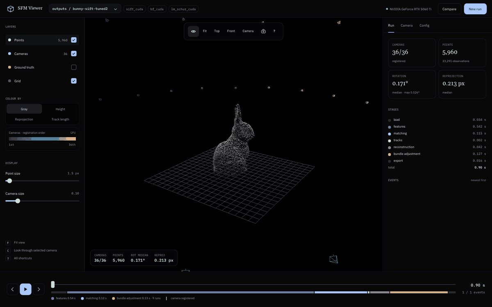
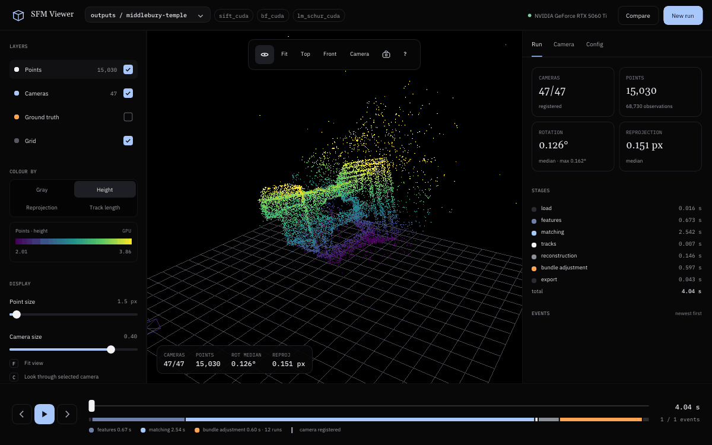
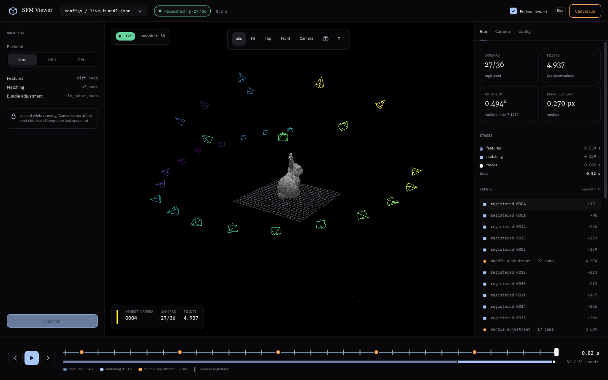
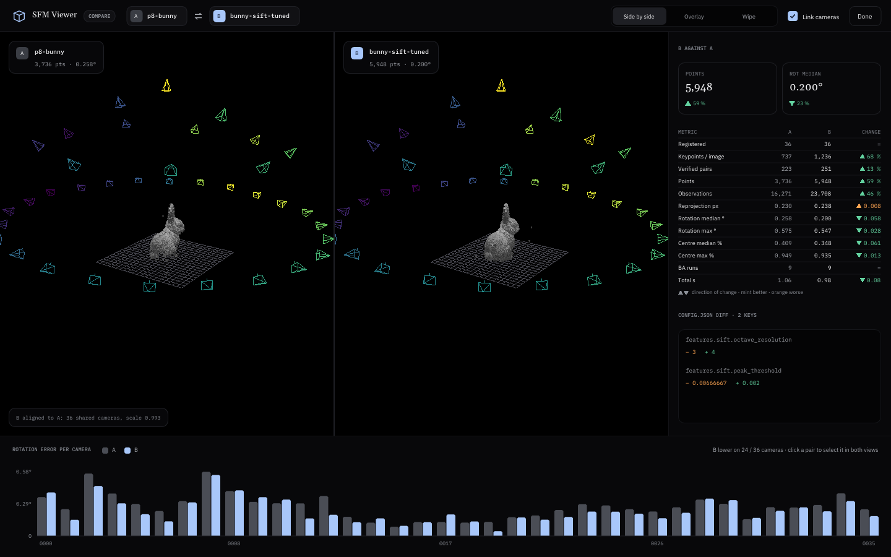

SFM
GPU Structure-from-Motion in C++17 and CUDA: 3D reconstruction from photos, with camera poses and a sparse point cloud, on an NVIDIA GPU or the CPU. Every stage has both versions, and they give the same results.


What it does
Structure-from-Motion recovers where each photo was taken and a 3D model of the scene from the photos alone. SFM does it the way COLMAP does, incrementally, with every stage in CUDA:
- Features: SIFT and ORB, bit-identical on the CPU and the GPU.
- Matching: exact top-2 (SIFT on the tensor cores), ratio test, 5-point E-RANSAC or F-RANSAC.
- Reconstruction: initial pair, PnP, multi-view triangulation, outlier filtering, local and global bundle adjustment with the Schur complement on the GPU; rigid multi-camera rigs.
- Viewer: watch a reconstruction run live, replay it, inspect cameras, compare two runs.
- Library: use it from your own C++ code (
sfm::pipeline::run_pipeline).
Results
| Dataset | Images | Registered | Rotation error (median) | COLMAP |
|---|---|---|---|---|
| Bunny (included) | 36 | 36 | 0.17° | 0.28° |
| ETH3D courtyard | 38 | 38 | 0.030° | 0.034° |
| ETH3D delivery_area, one camera | 237 | 237 | 0.20° | 0.46° |
| Middlebury templeRing | 47 | 47 | 0.13° | 0.18° |
| ETH3D delivery_area, four-camera rig | 948 | 948 | 0.09° | – |
Errors against each dataset's ground truth. ETH3D and Middlebury data are not included in the repository.
CPU or GPU
| Config | Images | CPU | GPU | Speed-up |
|---|---|---|---|---|
| Bunny, ORB | 36 | 2.3 s | 0.62 s | 3.8× |
| Bunny, SIFT | 36 | 26 s | 0.79 s | 33× |
| Middlebury templeRing | 47 | 48 s | 3.4 s | 14× |
| ETH3D courtyard (1550×1032) | 38 | 292 s | 4.1 s | 71× |
| ETH3D delivery_area, one camera | 237 | 105 s | 6.5 s | 16× |
Ryzen 7 9700X (16 threads) against an RTX 5060 Ti; both give the same result on each. Measured with bench_stages.
Get started
git clone https://github.com/Sovik-Ghosh/sfm-cuda.git cd sfm-cuda cmake --preset release && cmake --build --preset release -j # with CUDA 13 # or, without an NVIDIA GPU: cmake --preset cpu && cmake --build --preset cpu -j ./build/release/inference/apps/sfm_run configs/bunny_sift_tuned2.json ./build/release/inference/apps/sfm_viewer outputs/bunny-sift-tuned2
A prebuilt CPU-only Linux binary is attached to the latest release. To reconstruct your own photos, see Use your own images in the README.

